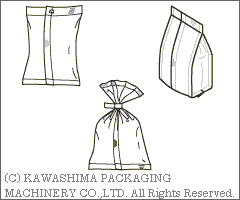

| কাওয়াসিমা মানে আপনার জন্য পরিপূর্ণ প্যাকেজিং সমাধান |
| (১)কেমন প্যাকেজিং চাই আপনার: |
| ভি.এফ.এফ.এস | মোড়কের ধরন অনুযায়ী মেশিন | ||
|  |  | ||
| এইচ.এফ.এফ.এস মেশিন | |||
 |
| KBF-7000V নতুন মডেল জাপান প্যাক 2011 এ প্রদর্শিত হবে। | |
| প্রদর্শনী জাপান প্যাক 2011 (জাপান আন্তর্জাতিক প্যাকেজিং যন্ত্রপাতি দেখান) অক্টোবর 18 (মঙ্গল) - অক্টোবর 21 (শুক্র) টোকিও বড় দৃষ্টিশক্তি | |
| ফোমা জাপান ২011 (আন্তর্জাতিক খাদ্য যন্ত্রপাতি ও প্রযুক্তি প্রদর্শনী) 7 জুন (মঙ্গল) - জুন। 10 (শুক্র) টোকিও বড় দৃষ্টিশক্তি | |
| MOBAC প্রদর্শন 2011 (যন্ত্রাদি বেকারি এবং মিষ্টান্ন শো এর পণ্য বিপণন) ফেব্রুয়ারি 16 (Wed) - ফেব্রুয়ারী 19 (শনি) | |
| অনুসন্ধান |
| কপিরাইট (সি) কিয়োটো ইঞ্জিনিয়ারিং এবং অটোমেশন লিমিটেড সর্বস্বত্ব সংরক্ষিত। |